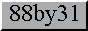

Remember: The internet is for cats.
/\_/\ ___
= o_o =_______ \ \ -Julie Rhodes-
__^ __( \.__) )
(@)<_____>__(_____)____/
If plagarism is frowned upon, then surely if you give attribution it isn't!
Used to be on Nekoweb!